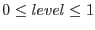
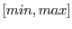
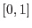
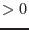
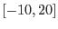

| Parameter | Mand | Type | Default | Constraints |
| table | yes | table | | name of existing table |
The table that contains the event data - need to at least contain the columns
named with the xcolumn, ycolumn, ecolumn parameters.
|
| colortablechoice | no | string | internal | internal external external |
Choice parameter determining source of the color table that is to be
used for the color coding. The value internal signifies
that an internal table is to be selected via the colortable
parameter. external activates the colortableset parameter.
|
| colortable | no | string | heat | name of existing internal color table |
If colortablechoice=internal the parameter signifies an
internal color table that is the be used in the color-coding of the
scalar event attribute. For a complete list of the available color tables
invoke the task in dialog mode (xcolorcod -d) and select the choice
widget labelled colortable.
|
| colortableset | no | data set | | name of exisiting data set |
If colortablechoice=external the name of an external data
set representing a color table that is to be used in the color coding
of the scalar event attribute. The format must adhere to the specifications
above.
|
| invertcolortable | no | boolean | false | truefalse |
With this boolean parameter the color curves in the color table can
be inverted, i.e., a component that is associated with the scalar
value level is associated with 1-level in the inverted
case.
|
| xcolumn | no | column | X | name of existing column in table |
The name of the column that specifies the  position of the event;
passed to evselect
as parameter xcolumn. position of the event;
passed to evselect
as parameter xcolumn.
|
| ycolumn | no | column | Y | name of existing column in table |
The name of the column that specifies the y position of the event;
passed to evselect
as parameter ycolumn.
|
| ecolumn | no | column | PI | name of existing column in table |
The name of the column that specifies the scalar event attribute
that is to be color-coded; passed to evselect
as parameter
zcolumn.
|
| ecolumnminmax | no | string | actualminmax | |
actualminmaxlegalminmaxexplicitminmax
|
In determining the actual color of a pixel via the color curves
the value range of the scalar column ecolumn is mapped onto
the color table's level column (
). The
choice parameter ecolumnminmax selects one of three possible
ways in which the dynamic value range  of ecolumn is
determined:
- actualminmax
- : from the data itself
- legalminmax
- : from the minimum/maximum legal values of the
column given as column attributes TLMIN/TLMAX
- explicitminmax
- : by explicit parameters min and
max
The ecolumn data value range will be linerly mapped
onto the level range .
| min | no | real | | |
Explicit minimum value of ecolumn column if
ecolumnminmax=explicitminmax
|
| max | no | real | 12000 | |
Explicit maximum value of ecolumn column if
ecolumnminmax=explicitminmax
|
| imagebinning | no | string | imageSize | imageSizebinSize |
passed to evselect
as parameter imagebinning
|
| squarepixels | no | boolean | false | truefalse |
passed to evselect
as parameter squarepixels
|
| ximagesize | no | integer | 600 |  |
passed to evselect
as parameter ximagesize
|
| ximagebinsize | no | real | 1 | |
passed
to evselect
as parameter ximagebinsize
|
| withxranges | no | boolean | false | truefalse |
passed to evselect
as parameter withxranges
|
| ximagemin | no | real | 1 | |
passed to evselect
as parameter ximagemin
|
| ximagemax | no | real | 600 | |
passed to evselect
as parameter ximagemax
|
| yimagesize | no | integer | 600 | |
passed to evselect
as parameter yimagesize
|
| yimagebinsize | no | real | 1 | |
passed to evselect
as parameter yimagebinsize
|
| withyranges | no | boolean | false | truefalse |
passed to evselect
as parameter withyranges
|
| yimagemin | no | real | 1 | |
passed to
evselect
as parameter yimagemin
|
| yimagemax | no | real | 600 | |
passed to evselect
as parameter
yimagemax
|
| scale | no | string | log | loglin |
Whether the intensity should be displayed linearly or logarithmically.
|
| decades | no | real | 4.0 |  |
Number of decades to be used
if scale=log.
|
| outputchoice | no | string | dataset | datasetppmfile |
If set to dataset image is written to a data set whose name is given
via parameter colorset. Otherwise, image is written in PPM format
to standard file named via ppmfile.
|
| colorset | no | string | colimg.ds | name of data set |
The name of the data set the color image shall be written to if
outputchoice=dataset. Depending on the value of ascube
the data will either be written to three separate arrays corresponding
to the red, green, and blue components or three slices of a 3-D data
cube in the primary array, respectively. The data set can be read
and the contents displayed with Ds9.
|
| ppmfile | no | string | stdout | name of file |
If outputchoice=ppmfile the name of a PPM data file
that the color image shall be written to. If ppmfile=stdout
the data shall be written to standard output.
|
| ascube | no | boolean | false | falsetrue |
Boolean parameter determining whether the red, green, and blue component
images are to be written as three separate array extensions to
the data set designated with colorset or as three slices of a
single 3-dimensional data cube in the primary array.
|
| Parameter | Mand | Type | Default | Constraints |